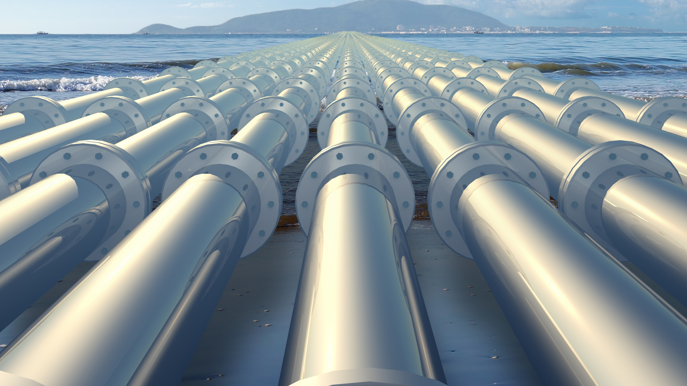
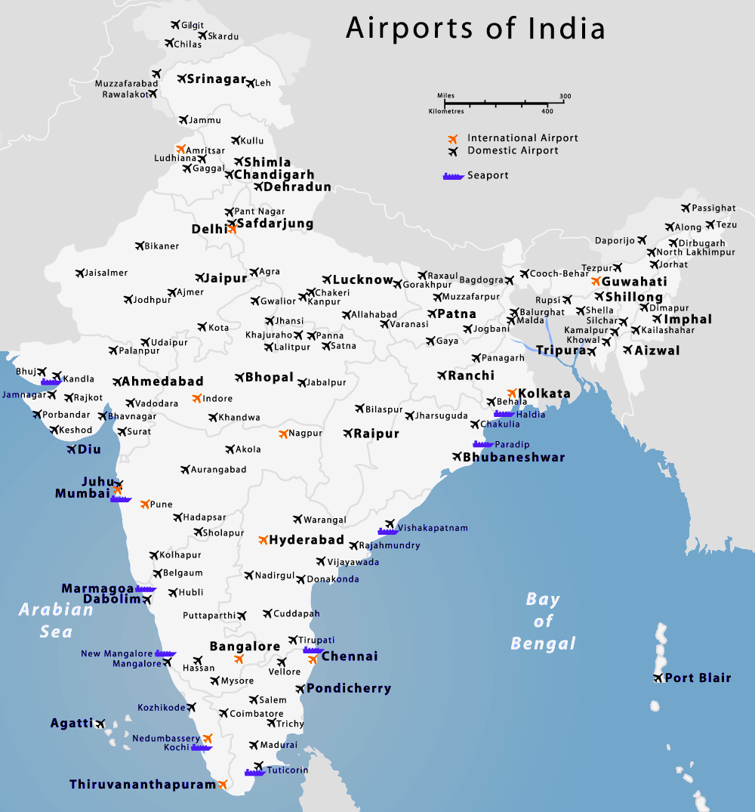
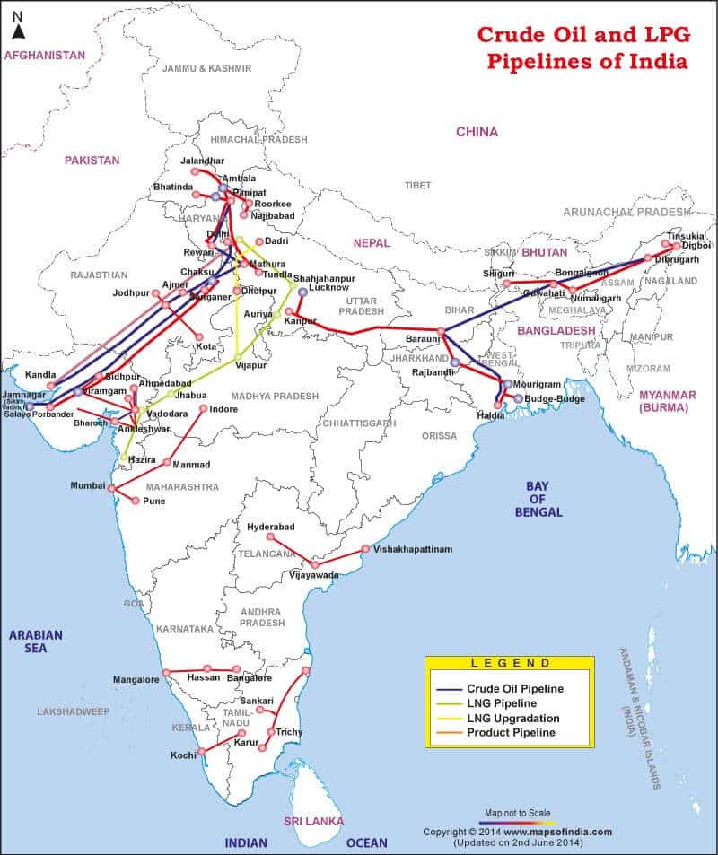

18 Transport Airways And Pipelines
Airways and Pipelines

Airways in India
Importance of Airways
Quickest Mode of Transport: Airways are the fastest way to travel, especially for long distances and difficult terrains. Strategic Connectivity: Essential for remote and inaccessible regions like the Northeast, Andaman & Nicobar Islands, and mountainous areas. Boost to Economy: Promotes tourism, trade, and overall economic growth by connecting major cities and regions. Emergency Services: Vital for disaster relief, medical emergencies, and defence purposes.
Types of Air Transport
Domestic Air Transport: Operates within the country, connecting different cities and regions. Examples include Indigo, Air India, and Spice Jet. International Air Transport: Operates flights between India and other countries. Air India and private airlines operate many of these routes. Helicopter Services: Used for connecting remote regions, as well as for medical and rescue missions.
Key Government Initiatives for Airways
UDAN (Ude Desh ka Aam Nagrik)
Objective: To make air travel affordable for the common man and improve regional connectivity. Features: Subsidized fares for flights on regional routes. Reduced taxes and financial support for airlines operating on less profitable routes. Impact: Enhanced connectivity to smaller cities and towns; has made air travel accessible to remote areas and boosted regional tourism and trade.
National Civil Aviation Policy (NCAP), 2016
Goal: To expand and sustain growth in the aviation sector. Key Components: Focuses on regional connectivity and making air travel affordable. Allows 100% Foreign Direct Investment (FDI) in aviation. Sets targets for increasing both domestic and international air passenger numbers. Impact: Improved infrastructure, enhanced foreign investment, and increased connectivity for the common man.
Airport Infrastructure Development
Greenfield Airports: New airports are being built in places like Navi Mumbai, Noida (Jewar), and Mopa (Goa) to handle growing air traffic. Expansion of Existing Airports: Airports in Delhi, Mumbai, and Bangalore have undergone expansion to manage increasing passenger numbers. Public-Private Partnerships (PPP):
Private players are involved in developing and managing airports, enhancing efficiency and customer service.
Air Navigation and Safety Improvements
GAGAN (GPS-Aided Geo-Augmented Navigation): Provides satellite-based navigation and improved safety for flights over India. ASMGCS (Advanced Surface Movement Guidance and Control System): Assists in managing aircraft movement on the ground at busy airports, reducing delays and enhancing safety.
Major Airports in India

Indira Gandhi International Airport (Delhi): The busiest airport in India, handling significant domestic and international traffic. Chhatrapati Shivaji Maharaj International Airport (Mumbai): A major hub for domestic and international flights. Kempegowda International Airport (Bangalore): A rapidly growing airport with high passenger traffic and a hub for tech city Bangalore.
Pipelines in India
Pipelines are essential for transporting fuels like natural gas, crude oil, and petroleum products across the country. They are cost-effective, safe, and critical for meeting India’s energy needs.
Importance of Pipelines
Efficient Transport: Pipelines are economical for transporting bulk energy products over long distances. Safety: Reduces the risk of accidents and spills compared to road and rail transport. Energy Access: Ensures a steady supply of fuels to regions that may not have access to other transport networks.
Types of Pipelines in India
Crude Oil Pipelines: Transport crude oil from ports or oil fields to refineries. Petroleum Product Pipelines: Carry refined products like petrol, diesel, and kerosene from refineries to storage depots and consumer points. Natural Gas Pipelines: Transport natural gas from production fields to consumers, including industries, households, and power plants.
Key Pipeline Networks
Hajira-Bijapur-Jagdishpur (HBJ) Pipeline
Description: India’s first and longest natural gas pipeline, spanning 1,750 km. Route: From western India (Hajira in Gujarat) to northern states like UP and Bihar. Significance: Supports industries and fertilizing plants with a steady gas supply, and powers major industrial zones.
Kandla-Bhatinda Pipeline
Purpose: Transport petroleum products from Kandla (Gujarat) to Bhatinda (Punjab). Impact: Ensures reliable fuel supply in the northern regions and reduces transportation costs.
Jamnagar-Loni LPG Pipeline
Claim to Fame: Longest LPG pipeline in the world. Route: Carries LPG from Jamnagar (Gujarat) to Loni (Uttar Pradesh). Significance: Supports domestic fuel needs across North India, providing a steady supply of LPG.

Eastern India Pipeline Network
Developed by GAIL (Gas Authority of India Ltd.) to support gas distribution across Eastern India. Covers states like West Bengal, Bihar, Odisha, and Jharkhand, supplying gas for industrial and household use.
Government Initiatives in Pipeline Infrastructure
National Gas Grid
Objective: To create a nationwide gas pipeline network that ensures reliable and widespread availability of natural gas. Key Projects: Linking various pipeline networks across the country to form a unified grid. Extending coverage to Northeast India, Jammu & Kashmir, and remote areas. Impact: Increases accessibility to natural gas, providing a cleaner energy option for industries and households.
Pradhan Mantri Urja Ganga Project
Objective: To bring natural gas to eastern and northeastern states, including UP, Bihar, Jharkhand, Odisha, and West Bengal. Scope: Involves laying over 3,000 km of pipeline. City Gas Distribution (CGD): Establishes piped gas and CNG networks in cities under this route. Benefits: Encourages a shift to clean energy, boosts industrialization in eastern India, and reduces pollution.
City Gas Distribution (CGD) Networks
Goal: To provide piped natural gas (PNG) for households and CNG for vehicles in urban and semi-urban areas. Impact: Helps in reducing pollution from LPG cylinders and petrol/diesel vehicles. Coverage: Major cities and smaller towns are being connected to piped natural gas, supporting environmental sustainability.
Petroleum and Natural Gas Regulatory Board (PNGRB)
Objective: Regulates pipeline infrastructure development and ensures fair competition. Role: Oversees licensing, tariff regulations, and pipeline expansions. Aims to provide transparency in the gas sector and ensures consistent supply and quality.